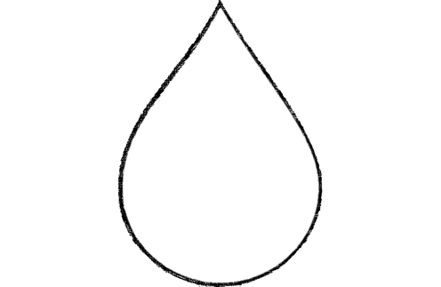

De acuerdo con el Instituto Nacional de Estadística y Geografía (Inegi), de las 35.2 millones de viviendas que hay en México, 8.1 millones (23.1%) no cuentan con agua entubada dentro del hogar. (Samanta Escobar, El economista, Mar 7, 2023)